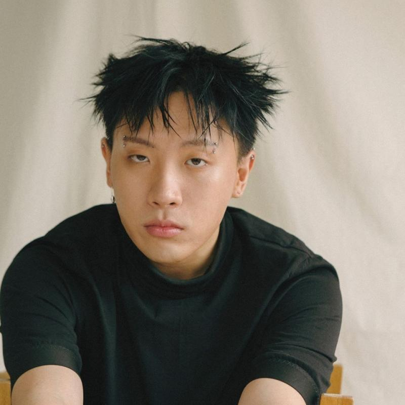

나플라(Nafla, 영어: Nicholas Seokbae Choi 니콜라스 석배 최[*], 본명: 최석배, 1992년 2월 28일 ~ )는 한국과 미국의 래퍼이며, 메킷레인 (MKIT RAIN)에 소속되어 있다. 2018년 11월 9일, 《쇼미더머니 777》에서 우승을 차지했다. 미국 캘리포니아 주 로스엔젤레스 오렌지카운티 출생이며 5살 때 한국으로 와서 초등학교 4학년까지 살고 다시 미국으로 이민가서 성장했다. 대한민국, 미국의 복수국적이다.
